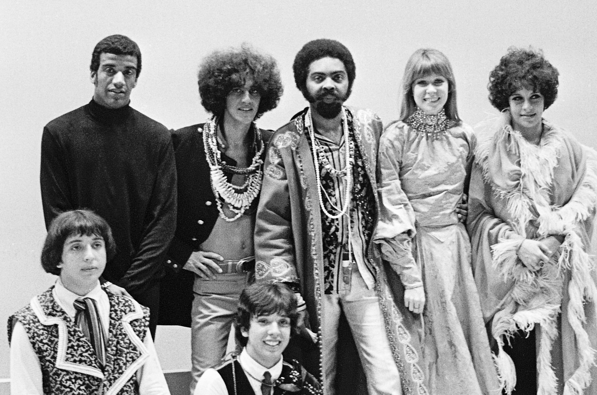

Seção Principal
O Movimento Tropicália, também conhecido como Tropicalismo, foi um dos movimentos culturais mais impactantes e controversos da história do Brasil, que surgiu na década de 1960.
Em meio a um contexto de efervescência política e social no país, a Tropicália foi uma resposta inovadora à conservadora sociedade brasileira da época.
No coração da Tropicália estava a fusão ousada de elementos culturais diversos, incluindo a música popular brasileira, a cultura pop internacional, a poesia concreta e a arte visual.
Caetano Veloso, Gilberto Gil, Gal Costa, Tom Zé e Os Mutantes foram alguns dos artistas mais proeminentes associados a esse movimento.
Eles incorporaram influências estrangeiras, como o rock 'n' roll e a psicodelia, em suas músicas, criando um som único e provocativo.